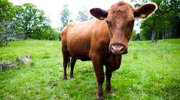

Massive burger
Massive burger
 |
Vår Hamburgerskapelse – En Smakupplevelse Utöver Det Vanliga På Massive Burger är varje hamburgare mer än bara mat – det är en passion och ett hantverk. Vi börjar med att noggrant välja ut de finaste råvarorna, från färskt, lokalt nötkött till nybakat bröd och krispiga grönsaker. Varje ingrediens samspelar för att skapa den perfekta balansen av smaker och texturer. |
| Så Producerar Vi Våra Varor – Kvalitet och Hållbarhet i Varje Steg På Massive Burger lägger vi stor vikt vid hur våra råvaror produceras. Vi samarbetar med noggrant utvalda, lokala producenter som delar vår passion för kvalitet och hållbarhet. Från köttet till grönsakerna säkerställer vi att allt är färskt, etiskt producerat och av högsta standard! |  |